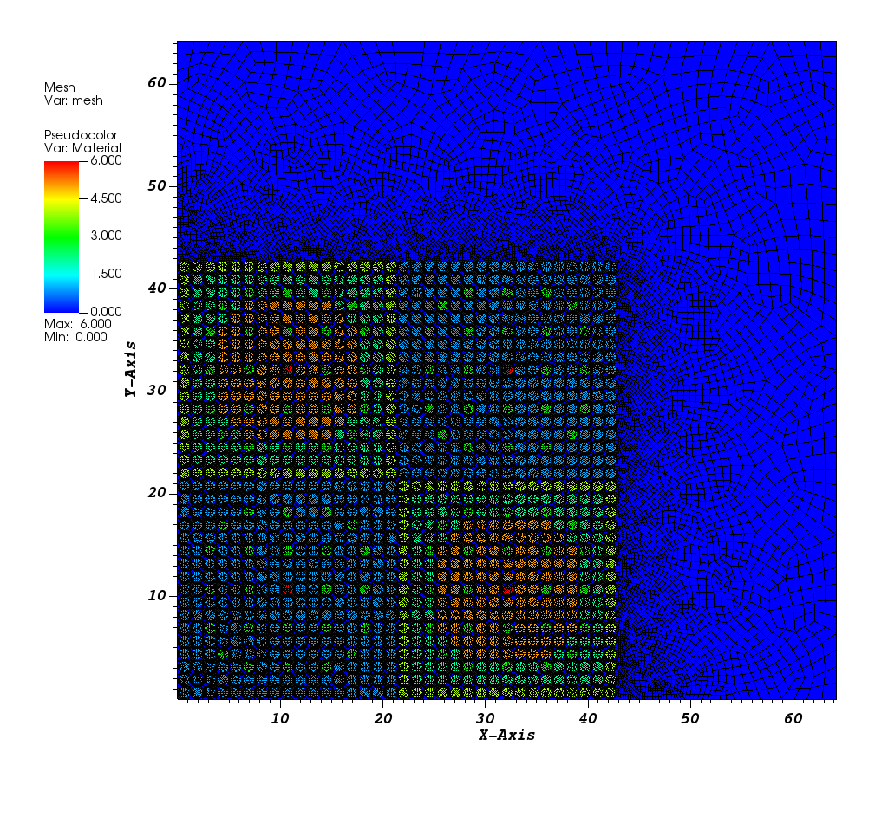
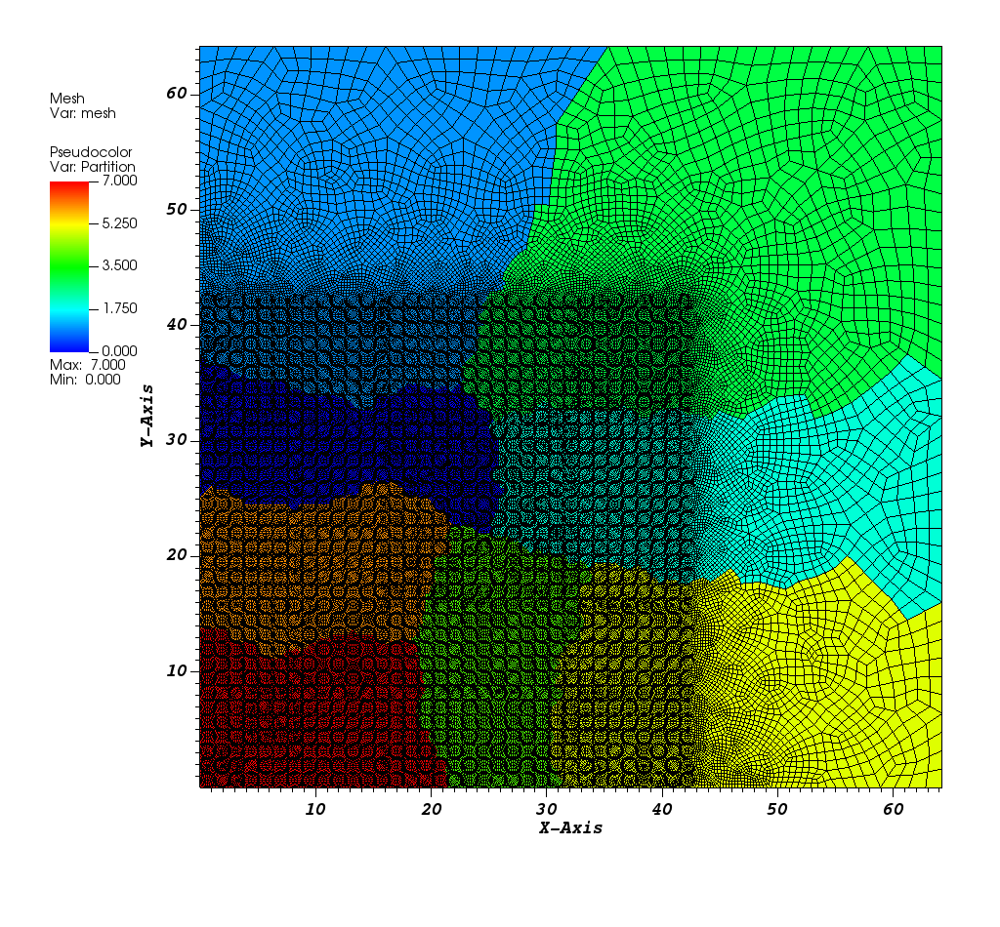

1.5. Reading a 2D .msh file
Reading a 2D .msh file with material IDs and boundary IDs.
We have created an unstructured mesh with the gmsh Mesh Generator.
1.5.1. Read the Mesh
We use the FromFileMeshGenerator and pass the path to the msh file.
We also partition the 2D mesh into 2x2 subdomains using Parmetis.
Finally, we export the mesh to a VTU file.
The resulting mesh and material layout is shown below:

When using the Parmetis partitioner, we obtain:

-- Setup the mesh
meshgen = mesh.MeshGenerator.Create({
inputs = {
mesh.FromFileMeshGenerator.Create({
filename = "../../test/modules/linear_boltzmann_solvers/transport_keigen/c5g7/mesh/2D_c5g7_coarse.msh",
}),
},
partitioner = mesh.PETScGraphPartitioner.Create({ type = "parmetis" }),
})
mesh.MeshGenerator.Execute(meshgen)
mesh.ExportToPVTU("c5g7_mesh_only")
1.5.2. The complete input is below:
You can copy/paste the text below or look in the file named tutorials/meshing/read_2D_msh.lua:
-- Setup the mesh
meshgen = mesh.MeshGenerator.Create({
inputs = {
mesh.FromFileMeshGenerator.Create({
filename = "../../test/modules/linear_boltzmann_solvers/transport_keigen/c5g7/mesh/2D_c5g7_coarse.msh",
}),
},
partitioner = mesh.PETScGraphPartitioner.Create({ type = "parmetis" }),
})
mesh.MeshGenerator.Execute(meshgen)
mesh.ExportToPVTU("c5g7_mesh_only")